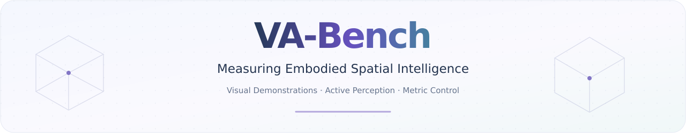
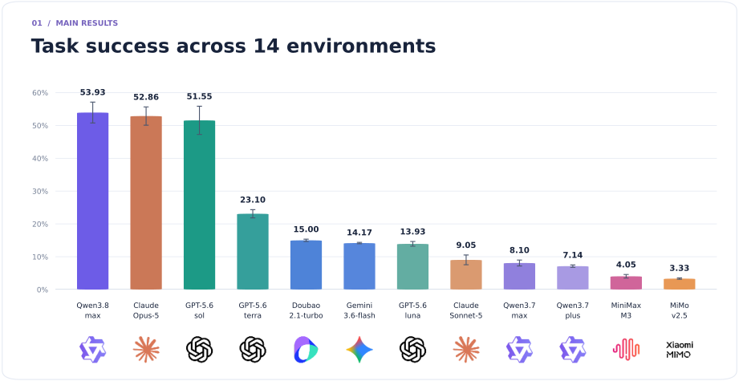
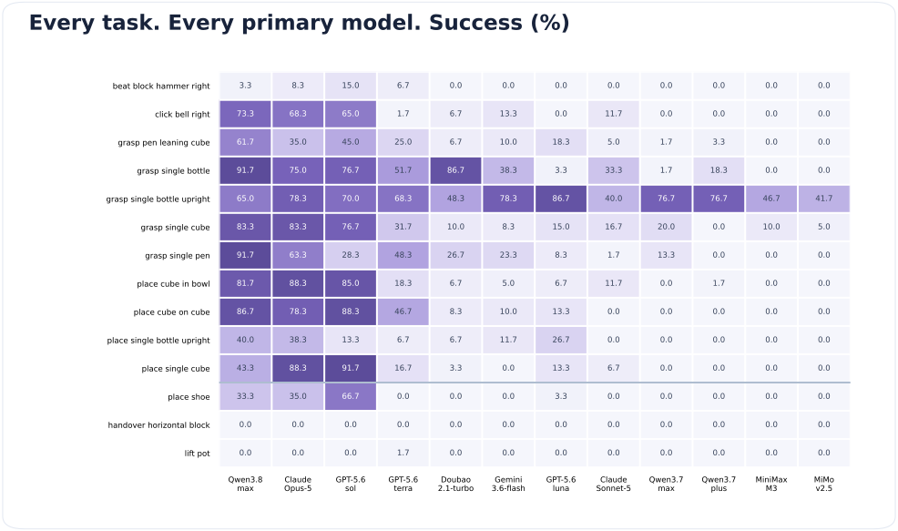
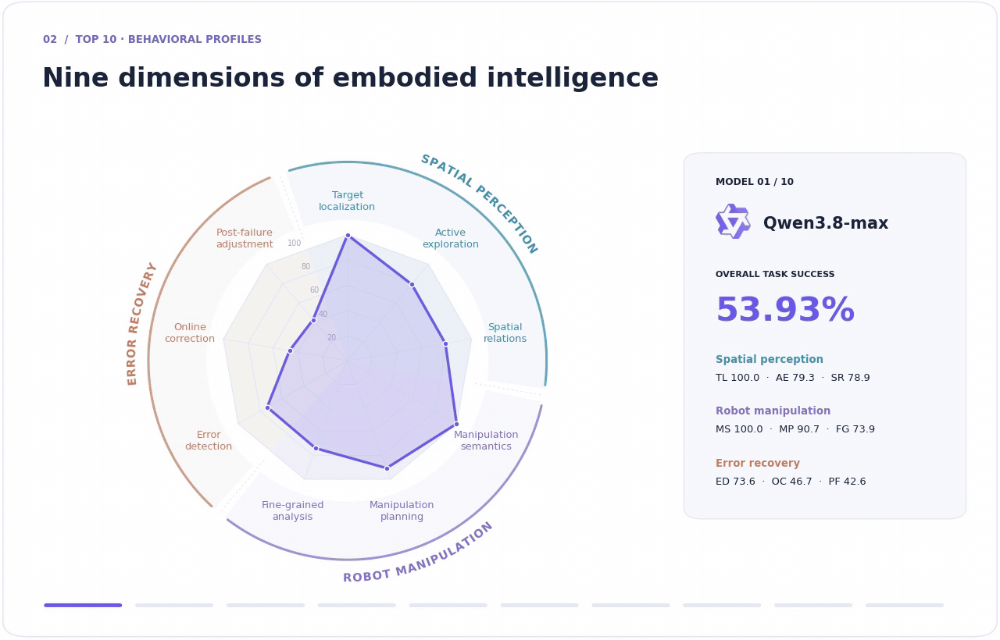

{kind=link}

Zhongbo Zhang1,* · Jiayi Jin1,* · Yifan Wang1 · Zaibin Zhang1
Haiwen Diao2 · Lijun Wang1 · Huchuan Lu1
1 Dalian University of Technology 2 Nanyang Technological University
* Equal contribution
Results / Capability profiles / Quick start / Download assets
Embodied spatial intelligence, tested through action. VA-Bench evaluates the complete observe–reason–act–revise loop. From RGB-only demonstrations, multimodal models learn task context, actively choose camera viewpoints, issue metric Cartesian commands, and revise their actions using execution feedback. We evaluate 12 models on 14 manipulation tasks, combining strict task success with nine behavioral diagnostics of perception, manipulation, and recovery.
Task success

View exact scores and all 14 task results
Each run covers 11 single-arm and 3 dual-arm tasks, with 20 physically verified seeds per task. Bars show the mean of the three run-level task macro-averages; error bars show sample standard deviation. The top three means are close and their run-level ranges overlap.
| Model | Success | Run-to-run SD |
|---|---|---|
| Qwen3.8-max | 53.93% | 3.17 pp |
| Opus-5 | 52.86% | 2.79 pp |
| GPT-5.6-sol | 51.55% | 4.31 pp |
| GPT-5.6-terra | 23.10% | 1.25 pp |
| Doubao-seed-2.1-turbo | 15.00% | 0.36 pp |
| Gemini-3.6-flash | 14.17% | 0.21 pp |
| GPT-5.6-luna | 13.93% | 0.71 pp |
| Sonnet-5 | 9.05% | 1.49 pp |
| Qwen3.7-max | 8.10% | 0.90 pp |
| Qwen3.7-plus | 7.14% | 0.36 pp |
| MiniMax-M3 | 4.05% | 0.55 pp |
| MiMo-v2.5 | 3.33% | 0.21 pp |

Behavioral profiles

Read the nine dimensions
The tour follows the top 10 models by overall task success. Each profile pools applicable single- and dual-arm episodes from one annotated run; the three recovery scores exclude error-free episodes. Smooth transitions connect the recorded profiles.
| Spatial perception | Robot manipulation | Error recovery |
|---|---|---|
| TL Target localization | MS Manipulation semantics | ED Error detection |
| AE Active exploration | MP Manipulation planning | OC Online correction |
| SR Spatial relations | FG Fine-grained pre-contact analysis | PF Post-failure adjustment |
Sonnet-5 uses its second annotated run; the other primary models use their first. The radar describes observed behaviors, while the success chart measures completed tasks. Static profile · MP4 animation
{kind=link}
Quick start
All assets required by the 14 main tasks are provided with this VA-Bench release.
No separate asset download from RoboTwin is needed. If assets/ is already present,
start below; otherwise, extract the release's asset bundle
into the repository root as described in the setup guide.
Use your existing RoboTwin environment, or follow the setup guide to create a new one:
conda activate RoboTwin
cd VA-Bench
python -m pip install --no-deps --no-build-isolation -e ./agent -e ./active_spatial_benchmark_xyz
python script/check_setup.py
Connect your vision-language model and start with one episode:
export AGENT_BASE_URL="http://localhost:8000/v1"
export AGENT_MODEL="your-model-name"
export AGENT_API_KEY="EMPTY"
python script/run_benchmark.py --run-id smoke \
--tasks grasp_single_cube --num-seeds 1 --gpus 0 --parallel 1
The default wire protocol is OpenAI Chat Completions (chat_completions).
To use Anthropic's native Messages API, switch explicitly before launching:
export AGENT_WIRE_API="anthropic_messages"
# Or add: --wire-api anthropic_messages
When Claude is served through an OpenAI-compatible endpoint, keep the default
chat_completions protocol.
Run all 14 tasks and monitor progress:
python script/run_benchmark.py --run-id full --gpus 0 1 --parallel 3
python script/monitor.py --run-id full
Environment & asset setup · Tasks & validated seeds · Asset release
Built on RoboTwin. MIT License · Model logo credits